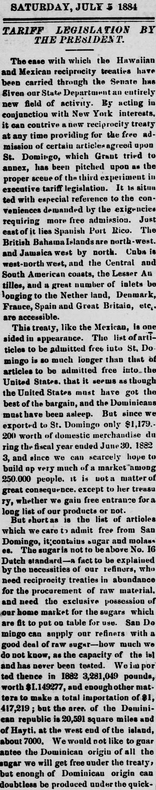
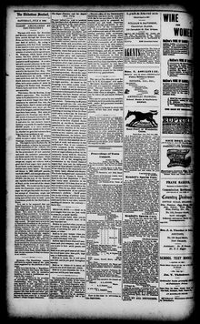

See the full pageVer la página completa16 Dutch standard—a fact to be explained by the necessities of our refiners16 patrón holandés—un hecho a explicarse por las necesidades de
The newspaper reported that San Domingo (the Dominican Republic) contains sugar and molasses, noting that US imports from there in 1882 totaled $1,417,219, with an unknown maximum capacity. It criticized a proposed reciprocity treaty as a "fraud" promoted by the State Department and President for the benefit of New York refiners, while expressing doubt that the House of Representatives would protest.El periódico dio cuenta de las existencias de azúcar y mieles en Santo Domingo (República Dominicana), haciendo notar que las importaciones estadounidenses desde allí alcanzaron en 1882 la cifra de 1.417.219 dólares, desconociéndose su potencial productivo máximo. Censuró el proyectado tratado de reciprocidad tildándolo de «artimaña» urdida por el Departamento de Estado y el presidente en exclusivo provecho de los refinadores neoyorquinos, dudando de que la Cámara de Representantes levantara su protesta.
FULL TEXT:TRADUCCIÓN:
The Thibodaux Sentinel, SATURDAY, JULY 5 1884.The Thibodaux Sentinel, SÁBADO, 5 DE JULIO DE 1884.
TARIFF LEGISLATION BY THE PRESIDENT.LEGISLACIÓN ARANCELARIA POR EL PRESIDENTE.
The ease with which the Hawaiian and Mexican reciprocity treaties have been carried through the Senate has given our State Department an entirely new field of activity. By acting in conjunction with New York interests, it can contrive a new reciprocity treaty at any time providing for the free admission of certain articles agreed upon. St. Domingo, which Grant tried to annex, has been pitched upon as the proper scene of the third experiment in executive tariff legislation. It is situated with especial reference to the conveniences demanded by the exigencies requiring more free admission. Just east of it lies Spanish Port Rico. The British Bahama Islands are north-west, and Jamaica west by north. Cuba is west-north-west, and the Central and South American coasts, the Lesser Antilles, and a great number of inlets belonging to the Nether land, Denmark, France, Spain and Great Britain, etc., are accessible.La facilidad con que los tratados de reciprocidad hawaiano y mexicano han sido llevados a través del Senado ha dado a nuestro Departamento de Estado un campo de actividad enteramente nuevo. Actuando en conjunto con intereses de Nueva York, puede idear un nuevo tratado de reciprocidad en cualquier momento proveyendo la admisión libre de ciertos artículos acordados. Santo Domingo, que Grant trató de anexar, ha sido escogido como la escena apropiada del tercer experimento en legislación arancelaria ejecutiva. Está situado con especial referencia a las conveniencias demandadas por las exigencias que requieren más admisión libre. Justo al este de él se encuentra el Puerto Rico español. Las Islas Bahamas británicas están al noroeste, y Jamaica al oeste por el norte. Cuba está al oeste-noroeste, y las costas de América Central y del Sur, las Antillas Menores, y un gran número de ensenadas pertenecientes a los Países Bajos, Dinamarca, Francia, España y Gran Bretaña, etc., son accesibles.
This treaty, like the Mexican, is one sided in appearance. The list of articles to be admitted free into St. Domingo is so much longer than that of articles to be admitted free into the United States, that it seems as though the United States must have got the best of the bargain, and the Dominicans must have been asleep. But since we exported to St. Domingo only $1,179,200 worth of domestic merchandise during the fiscal year ended June 30, 1883, and since we can scarcely hope to build up very much of a market among 250,000 people, it is not a matter of great consequence, except to her treasury, whether we gain free entrance for a long list of our products or not.Este tratado, como el mexicano, es unilateral en apariencia. La lista de artículos a ser admitidos libres en Santo Domingo es tanto más larga que la de artículos a ser admitidos libres en los Estados Unidos, que parece como si los Estados Unidos hubieran obtenido lo mejor del trato, y los dominicanos hubieran estado dormidos. Pero como exportamos a Santo Domingo solo $1,179,200 en mercancía doméstica durante el año fiscal terminado el 30 de junio de 1883, y como difícilmente podemos esperar construir mucho de un mercado entre 250,000 personas, no es un asunto de gran consecuencia, excepto para su tesorería, si ganamos entrada libre para una larga lista de nuestros productos o no.
But short as is the list of articles which we care to admit free from San Domingo, it contains sugar and molasses. The sugar is not to be above No. 16 Dutch standard—a fact to be explained by the necessities of our refiners, who need reciprocity treaties in abundance for the procurement of raw material, and need the exclusive possession of our home market for the sugars which are fit to put on table for use. San Domingo can supply our refiners with a good deal of raw sugar—how much we do not know, as the capacity of the island has never been tested. We imported thence in 1882 3,281,049 pounds, worth $1,149,277, and enough other matters to make a total importation of $1,417,219; but the area of the Dominican republic is 20,591 square miles and of Hayti, at the west end of the island, about 7,000. We would not like to guarantee the Dominican origin of all the sugar we will get free under the treaty, but enough of Dominican origin can doubtless be produced under the quick-Pero corta como es la lista de artículos que nos importa admitir libres desde Santo Domingo, contiene azúcar y melaza. El azúcar no ha de estar por encima del No. 16 del estándar holandés—un hecho a ser explicado por las necesidades de nuestros refinadores, quienes necesitan tratados de reciprocidad en abundancia para la obtención de materia prima, y necesitan la posesión exclusiva de nuestro mercado doméstico para los azúcares que son aptos para poner en la mesa para uso. Santo Domingo puede suplir a nuestros refinadores con bastante azúcar cruda—cuánta no sabemos, ya que la capacidad de la isla nunca ha sido probada. Importamos de allí en 1882 3,281,049 libras, con un valor de $1,149,277, y suficientes otros artículos para hacer una importación total de $1,417,219; pero el área de la república dominicana es de 20,591 millas cuadradas y la de Haití, en el extremo oeste de la isla, de unas 7,000. No nos gustaría garantizar el origen dominicano de toda el azúcar que obtendremos libre bajo el tratado, pero suficiente de origen dominicano puede sin duda producirse bajo el rápido-
The Weekly Thibodaux Sentinel and Journal of the 8Th Senatorial District. Thibodaux, Lna. [i.e. La.], July 5, 1884. Page 4.